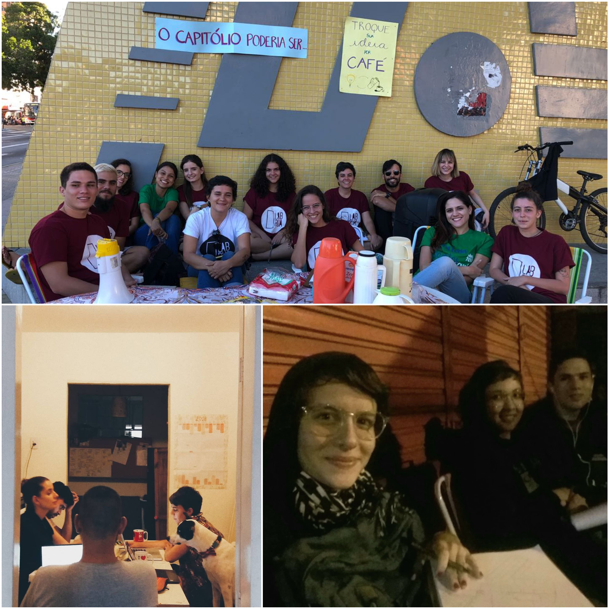

©2017 LabRua
Template: Bootstrapious
+ Kishan B

Minha experiência enquanto estudante de História no LabRua
2020-29-05; historia, urbanismo, interdisciplinaridade, experiência
Um pouco da minha trajetória pessoal vivenciando os encontros entre a história e o urbanismo através do LabRua.
por Yona Kaluaná
Muita gente fica intrigada quando falo que sou pesquisadora do LabRua e faço graduação em História, a maioria das pessoas acha automaticamente que eu curso Arquitetura e Urbanismo, já que grande parte das atividades e pesquisas do laboratório abrangem principalmente urbanismo. Mas pra mim é impossível separar completamente diferentes áreas do conhecimento já que tudo está um tanto relacionado, e gosto de pensar nessas relações. Foi justamente o que me motivou, junto à curiosidade e a vontade por novas experiências, a me inscrever no processo seletivo do Lab em 2017 - mas confesso que eu não fazia ideia do que ia fazer caso fosse selecionada. Eu sabia que alguns dos trabalhos eram voltados pras questões urbanísticas, que se debatia o direito à cidade e que também havia alguma ligação com arquitetura, coisas que no geral eram de meu interesse… Por isso, resolvi me aventurar mesmo não tendo inicialmente visualizado uma relação direta das atividades do LabRua com a História, até porque ainda estava no terceiro período do curso.
A primeira pesquisa de que participei trabalhou os espaços públicos, a relação do pedestre com a rua e o mobiliário urbano, além de outras questões. De cara tive que aprender diversos conceitos e teorias que nunca tinha ouvido falar, mas que rapidamente consegui interligar com aquilo que eu vivia. Lembro como me senti ao relacionar os estudos sobre “fachadas ativas/mistas/monótonas” etc, aos percursos que fazia todo dia ao sair de casa, prestando atenção à calçada em que sempre preferi andar na rua onde moro. Foi a partir desse momento que eu percebi como os processos históricos estão intimamente ligados à relação que as pessoas vêm construindo com e na cidade, e como tudo o que eu estudo e aprendo me compõe enquanto ser social.

Foi principalmente com base nessa troca que a minha relação com a cidade em que nasci e sempre morei mudou completamente, assim como o meu estilo de vida. Aprendi que é possível usar a bicicleta como meio de transporte, que é possível me divertir pelo simples fato de estar nela, que é uma delícia estar no espaço público e que posso e devo me apropriar dele. Aprendi que meu trajeto pela História está longe do academicismo tradicional e que não tem problema nisso, pois este não comporta os diversos caminhos que ainda quero explorar. Aprendi que quanto mais a gente aprofunda e estabelece relações entre os conhecimentos diversos, melhor a gente consegue compreender tudo o que está ao nosso redor.
E, para além da experiência profissional e acadêmica, revisitar essas memórias também me faz lembrar com carinho das pessoas que estiveram e estão comigo nessa jornada de quase três anos no Lab. Seja pra tomar um cafézinho junto, conversar sobre a vida ou qualquer besteira, fazer contagem de madrugada, discutir sobre política e tantas outras coisas: essas trocas são tão importantes quanto os estudos e as teorias. Posso dizer que a minha experiência é uma grande junção de interesses pessoais e profissionais que em algum momento se tornaram uma coisa só, e que carrego em tudo o que faço e vivo hoje.
